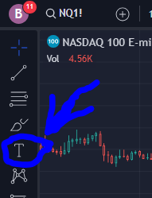

2 templates.
Separator: separate sections of object tree
In Folder: goes in folders
Anchored notes are here. Long left click or click on the edge to bring up popup menu.

Under settings:
Label is 0%
Text is white 100%
Font 16
Separator: 100% black background, 100% blue border
In Folder: 30% black background, 0% border
Separator template can be used as a separator between different sections of the object tree.
in Folder template can be used in folders. It has a see through background so you can see the chart while analyzing the notes.